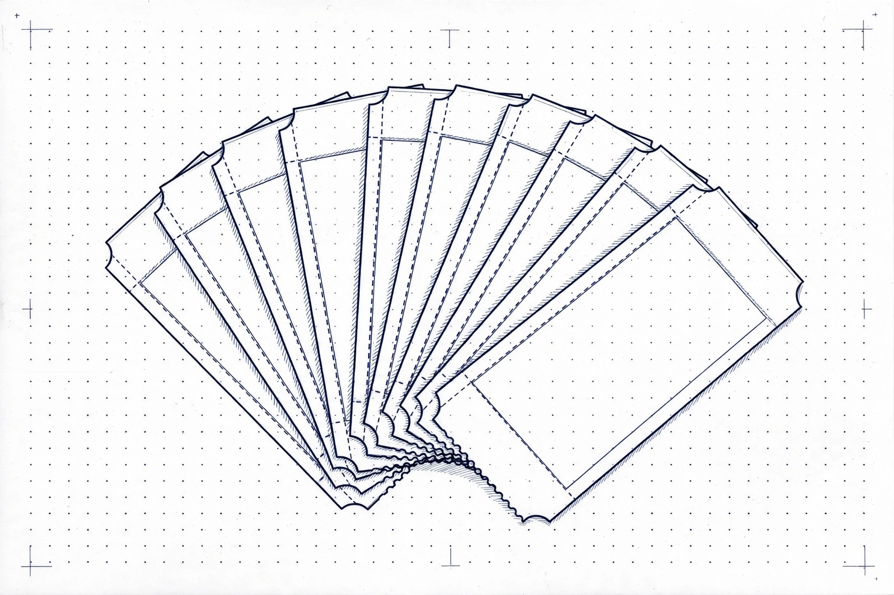
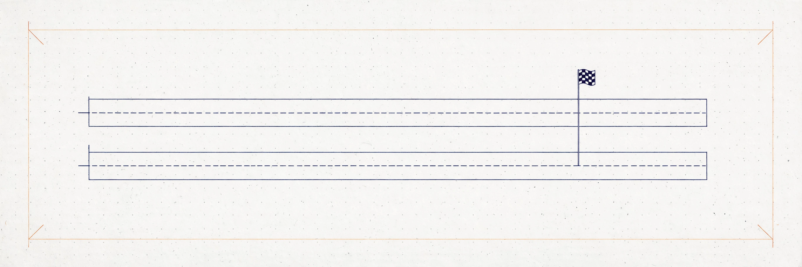
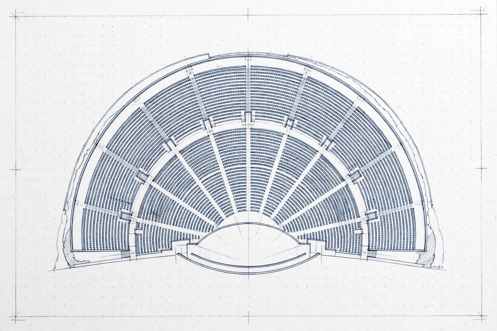

Qloo is not configured for this demo. No verdict can be computed without live Qloo data.
The form below is disabled until Qloo is configured — nothing here is mocked or invented.
No. 02 — The offer
Check an offer
Start here — edit any field. This starting example is not a real deal.
Other tools rank openers for a show. OfferSheet answers whether to sign the guarantee at all — a ticket count, not a ranking.
The form is disabled because Qloo is not configured for this demo — no verdict can be computed without live Qloo data.
No sign-in. One money decision, before you sign.
See how the number is computed
Four cards — three recorded trials, one blank. Tap a trial to prefill the form; the verdict still requires pressing “Run the verdict”. Nothing auto-runs.
Verdict
Aggregate taste signals only — they show how much two audiences share, never a prediction about any individual, and never a promise this show will sell out.
Cannot break even in this room at this guarantee
Break-even share of seats in this room (not a sellout prediction):
- Ticket price
- Net per ticket
- Capacity
Audience evidence
Opener shortlist, ranked for this city audience
Evidence details: who the audience is, whether the artist is rising, shared tags, how the fan bases overlap
Sources checked
Partial evidence — not a verdict
No break-even number is shown without a price. What follows is partial Qloo evidence, not a verdict.
No. 05 — The race
My gut pick vs the taste-data pick
Gut vs Graph, live. An arm with no provider is shown as unavailable, never given a pick.

Ticket stack, close-up. Fanned perforated tickets on studio-white proof paper, dot grid and crop marks. No numbers are baked into the drawing.

Two lanes, one finish line. Two parallel race lanes with a finish flag on studio-white proof paper.
Comparison arms require an LLM provider — verdict unaffected.
Show the comparison arms anyway
The arms below ran without an LLM provider, so their lanes are unavailable — the verdict above does not depend on them.
No. 08 — The workspace
Deal workspace
One offer, followed through every commercial move: replacement, renegotiation, routing, budget envelope, comparison, and a settlement check. The workspace lives on this device only — export the JSON to keep it.
Base offer
Editing a term creates a new workspace; prior steps are dropped, never silently re-based.
Replacement
The headliner drops. Re-price a replacement act inside the original terms.
Renegotiation
What must change to reach break-even, holding the other terms fixed.
Routing — where next
Candidate cities you type, ranked by matched-area counts.
Budget envelope
The most you will pay, or the most tickets you can credibly put in the room — exactly one input.
Comparison — up to 5 offers
Row 0 is always the verified base, never re-run.
Settlement check
After the show: promoter-reported attendance against the recorded threshold.
Recorded trials — from the committed benchmark ledger. Recorded, not live.
Gut vs Graph — recorded trials
Proof for every number (click to re-check)
Every claim, with the exact call behind it. Replay re-runs that call live.
Keys never appear here — receipts carry hashes and request IDs, never keys.
Verdict sheet — print or copy
Generated from this verdict's own data — never a diverging copy. Print it, or copy the promoter brief.
No. 03 — The proof
How deep does OfferSheet's Qloo integration go?
10 of 10 official Qloo tools, wired into the verdict — 8 of them receipted live.

Seating bowl, detail. Amphitheater seating rows on studio-white proof paper, dot grid and crop marks. No numbers are baked into the drawing.

Proof slips, checked. Six plain receipt slips with check marks on studio-white proof paper, dot grid and crop marks. No numbers are baked into the drawing.
Qloo tools wired into the verdict
| Tool | What it does | Live status |
|---|---|---|
| qloo_ | Readiness gate — runs first on every verdict; the "Qloo live" badge turns green only after a live call succeeds, never from config alone | Live, receipted |
| qloo_ | Tag-first path — the headliner is resolved to Qloo tags before any audience call; unresolved input shows as unmeasured, never guessed | Live, receipted |
| qloo_ | Headliner + opener cards; an ambiguous name returns candidates to pick from — the verdict never guesses | Live, receipted |
| qloo_ | Opener candidates from fans of the headliner | Live, receipted |
| qloo_ | The opener shortlist ranked for the city audience | Live, receipted (second live run) |
| qloo_ | Where the headliner is popular — the city-audience areas behind the verdict | Live, receipted |
| qloo_ | Full age/gender bands for the headliner audience — not a single top band | Live, receipted |
| qloo_ | Top shared tags between headliner and opener | Live, receipted |
| qloo_ | 90-day momentum leg | Wired; returned empty on live runs so far — shown as no data, never faked |
| qloo_ | Headliner-vs-opener audience overlap | Wired; returned empty on live runs so far — shown as no data, never faked |
REST cross-check layer. Four endpoints wired — /search, /v2/insights (with explainability), /v2/analysis/compare, /entities — so the REST legs cross-check the MCP legs on the same question.
Status, stated plainly: REST restSearch and restEntities receipted live in the 29 Oct 2026 trials; back-to-back runs returned REST 429s, shown as exact failure labels; trends/compare remain wired and empty on live runs so far.
Every claim carries a receipt — and every receipt re-runs. Each verdict row shows its SHA-256 request hash, its response requestId (REST legs; MCP legs carry an argument hash and no upstream requestId, labeled as such), its result count, and its ordered entity IDs. Click any receipt to re-run the exact call: a match stamps "same IDs in the same order" (proven live: a find_tags replay returned the same 10 tags in the same order); a mismatch surfaces as "count matches but order/IDs differ" — never hidden, never counts-only.
The verdict depends on Qloo — it cannot render without it. If Qloo is unconfigured or any required evidence leg fails, the page shows "Verdict withheld: evidence incomplete" with no numbers at all. No mock data, no demo numbers, no silent fallback — ever. Live runs observed 2026-10-29: Billie Eilish in New York → break-even 2,084 tickets, Qloo pick Olivia Rodrigo; Taylor Swift in New York → break-even 2,084 tickets, Qloo pick Carly Rae Jepsen; both in ~16–18 seconds, both with capacity honestly unknown (Ticketmaster returned no capacity for the room — shown as tickets needed, never as a sellout percentage).
Gut vs Graph — the honest state. OfferSheet runs three arms on the same question: Gut (LLM alone), Graph (Qloo-grounded — the verdict), and Web (LLM + Wikidata facts, no Qloo), with every miss named in a ledger. The ledger and all three arms are live in code; 3 live trials ran 29 Oct 2026 (Qwen primary, Groq fallback proven live) and are recorded in the public benchmark ledger in this repo — counted from ledger rows, never asserted in advance.
What this integration does not claim. No headcount is ever shown (Qloo returns matched areas and entities, not a population number). No sellout prediction is ever shown. Past winners are pattern context only — their technical depth was never independently verified, so nothing here claims to have beaten them.
No. 06 — The formula
How the number is computed
Recompute it yourself from the live verdict numbers.

The count, drawn as a dimension. A dimension line, a ticket strip, and a segmented bar on studio-white proof paper. No numbers are baked into the drawing.
Break-even tickets = ceil(guarantee ÷ (ticket price − variable cost per ticket))
Run a verdict to see its worked example here.
When capacity is known and break-even tickets exceed it, the verdict is: “Cannot break even in this room at this guarantee.” When capacity is unknown, no sellout percentage is shown at all.
What Qloo doesn't decide
Qloo affinities are aggregate taste-overlap signals. They do not decide any of the following — and this page never presents them as if they did:
- No headcount. Qloo returns matched areas and entities, not a population number.
- No sellout prediction. A break-even count is not a promise the room fills.
- No prediction about any individual. Audiences are aggregates, never a person.
- No causal claim. Shared taste does not cause a show to sell out.
- No booking availability, price, or terms. An opener pick is not a booking, and unconfirmed terms stay unconfirmed.
- No signing recommendation. The verdict is a count with evidence; the promoter decides.
Failure cases — what you see, and what it means
| Case | What the page shows | What it means |
|---|---|---|
| Qloo not configured | Visible 503, form disabled | Outage refusal — no verdict can be computed |
| Required evidence leg fails | “Verdict withheld: evidence incomplete”, no numbers | Outage refusal — the missing legs are named |
| Price unknown | No break-even number; partial evidence only | Thin-data state — a count needs a price |
| Ambiguous headliner name | Needs-input picker, no guess | Thin-data state — pick the entity you mean |
| Capacity unknown | Tickets needed only, no sellout percentage | Thin-data state — verify room size before signing |
| REST leg rate-limited (429) | Exact failure label on that leg | Outage label — the verdict still stands on MCP legs |
| Trends / compare empty | Shown as no data | Thin-data state — never faked |
| No opener clears the checks | No forced winner | “No equivalent cleared the evidence checks — this does not mean none exists.” |
Cite-or-omit rule. Every Qloo-backed sentence on a verdict traces to a receipt below; LLM-arm picks are labelled LLM-only. A sentence with no backing receipt is dropped or labelled LLM-only — never presented as Qloo-backed.
No. 07 — The ledger
Benchmark ledger
Committed, rerunnable Qloo-vs-Gut-vs-Web trials. Runs appear here only after real runs.
Download offline replay pack (recorded, not live) — the 3 dated trials, frozen with checksums. Re-verify the arithmetic and the recorded picks without a fresh Qloo call.
No personal data is sent to Qloo. Aggregate audiences only. If Qloo is not configured, the page fails closed with a visible 503 — never mock data. Qloo affinities are aggregate taste-overlap signals — how much two audiences share — never predictions about any individual, and never a causal claim that a show will sell out.